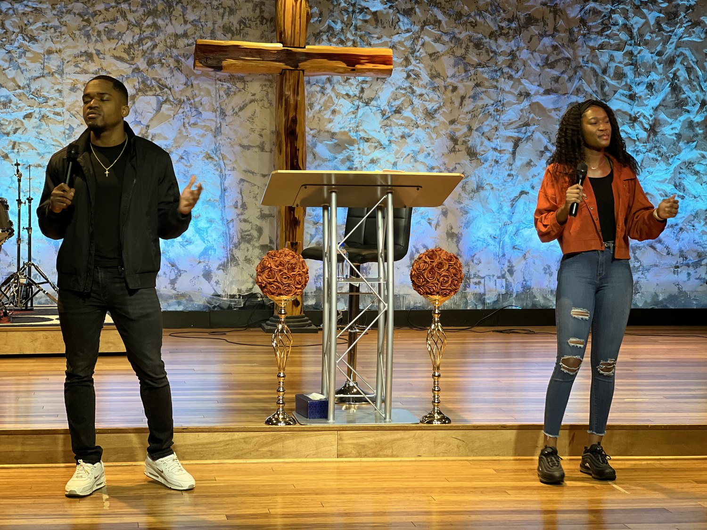
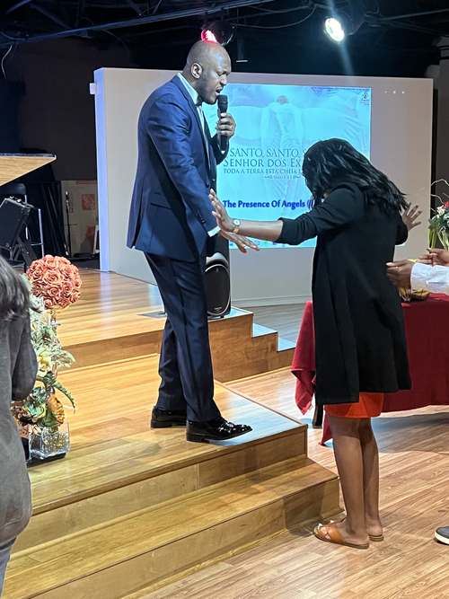

Reach the lost
Share the saving love of Jesus with people who have never known Him and welcome back those who have wandered away.
Find a place to begin →The Lord's Holy Fire Family Church
Come encounter the presence of God, grow in His Word, and be equipped to carry the Gospel into your family, your city, and the world.
Go and make disciples of all nations. Matthew 28:19–20

Our God-given vision
Jesus Embassy Church exists to advance the will of God: reaching the lost and backsliders, discipling believers into leadership, and equipping the body of Christ to take the Gospel all over the world.
Read the full vision ↗The mission in motion
Not just a statement—three clear commitments that shape how this church serves people.
Share the saving love of Jesus with people who have never known Him and welcome back those who have wandered away.
Find a place to begin →Help believers mature in the Word, prayer, and obedience so they can lead with conviction and compassion.
Meet our pastors →Prepare God's people for the work of ministry and send them into the world with the power of the Gospel.
See the impact →Meet our senior pastor
Called to ministry and trained at Rhema Bible College, Bishop Raymond has served families across the United States and around the world. In 2017, he answered God's call to bring the Holy Fire Ministry to the Dallas area. Today, he leads Jesus Embassy Church with a commitment to the Holy Spirit, love, and power.
A rhythm of worship and prayer
There is a place for you throughout the week—in the room and online.

Spirit-filled worship, biblical preaching, prayer, healing, and a family ready to welcome you.
Plan your visit →Begin every day in prayer on Zoom. Communion is shared each Saturday.
Prayer details ↗ Wednesdays · 6:00 PMOpen the Scriptures, ask honest questions, and grow in practical faith.
Learn more ↗ Last Sunday monthly · 6:00 PMA focused evening of prayer, healing, deliverance, and revival.
View events ↗Faith beyond our walls
The Gospel moves from worship to service—locally and around the world.
Caring for children and families
Jesus Embassy partners with City of David Children's Home, City of David Mission Home, and Trinitarian Foundation School in Asaba, Nigeria.
Jesus Christ at the center
We believe the Scriptures are inspired, salvation is by grace through faith, the Holy Spirit empowers believers, divine healing is available, and Jesus Christ is coming again.

You are welcome here
Sunday worship · 6:00 PM
3405 Custer Rd., Suite 200Questions before you arrive? Call (972) 380-7745 or email jesusembassychurchdfw@gmail.com.
A place to grow in God
Whether you are new to faith or ready for a deeper walk with God, Jesus Embassy Church is ready to welcome you.